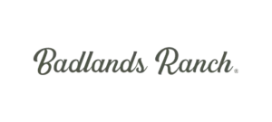

I am a web developer and designer based in Los Angeles. I use code and visual design to build brand experiences.
End-to-end web experiences, concept through launch.
Interfaces balancing aesthetics, usability and speed.
Websites as growth tools, improved by experiment.
Design, engineering and business goals in one line.
Most work stops at the handoff: a design that was never built, or a build that was never designed. I do both ends, so nothing is lost in the gap between them — the visual intent survives all the way into production code.
That means end-to-end web experiences that pair strong visual design with clean, scalable development, and a process that treats a site as a growth tool rather than a delivery. Success is built on vision, strategy and collaboration. This page is the argument: every surface below is generated in the browser at load, with no model files and no images behind the scene.
See recent work
I specialize in helping businesses and individuals create an impactful, thoughtful, and elegant digital presence. For the past ten years I've designed and built for brands like Mattel, Newegg and USC — taking projects from first concept through to launch, and staying with them long enough to see what the numbers say.
End-to-end web experiences that combine strong visual design with clean, scalable development.
Intuitive, visually compelling interfaces that balance aesthetics, usability and performance.
Websites as growth tools, using data and experimentation to continuously improve the experience.
Cross-functional alignment of design, technical execution and business goals.
Get a working, production-ready prototype deployed, to gather real-world data to iterate on.
Data-driven insight combined with informed solutions, for quick iteration and metric improvement.
Analysis leads to improved strategy. Relaunch better informed, with results backed by data.
Designed and managed email marketing campaigns.
Created visual design solutions across client campaigns.
Designed research-driven visual assets and brand materials.
Immersive programme in full-stack software engineering.
Led web design and development, owning projects from concept to deployment.
Building and optimising digital experiences at scale.
If you have a project that needs design and engineering held by the same pair of hands, I would like to hear about it. Based in Los Angeles, working anywhere.
Start a project